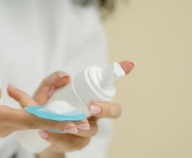
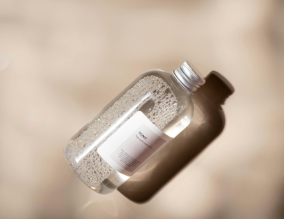
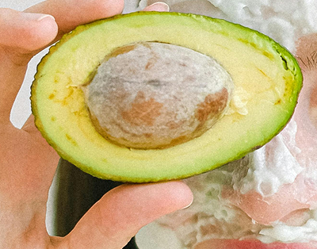

Pelle sensibile
Se hai la pelle sensibile, che presenta spesso rossori, secchezza, sfoghi o infiammazioni, cerca formule skincare per lenire e rafforzare la barriera cutanea.
Quando la tua pelle si sente particolarmente sensibile o irritata, semplifica il più possibile la tua routine e utilizza soltanto formule con ingredienti efficaci ma delicati.
Cosa scegliere
Detergente
Rimuovi le impurità con un Detergente Viso per Pelli Sensibili.
- Rimuove residui di sporco, sebo in eccesso e impurità senza ostruire i pori o irritare la pelle
- La sua formula con pH bilanciato previene la disidratazione
- Dermatologicamente testata su pelle sensibile al 100%
Tonico
Lenisci la Pelle con un Tonico alla Calendula.
- Deterge delicatamente, tonifica e lenisce la pelle
- Formulata senza alcool o agenti detergenti sintetici aggressivi
- Infuso con calendula, un'erba medicinale molto apprezzata nota per lenire la pelle
Contorno occhi
Idrata il Contorno Occhi con una Crema all'Avocado.
- Fornisce una rapida idratazione alla zona degli occhi
- La sua texture concentrata non migra negli occhi
- Nutre e idrata la zona
- Formulato con Olio di Avocado, Beta-Carotene e Burro di Karité



Consigli aggiuntivi
Ripara la pelle con la Cica-Cream
Se la tua pelle è secca o mostra rossori visibili, sostituisci la tua crema idratante quotidiana con la cica-cream. Aiuta a idratare intensamente per 48 ore, ripara e protegge la barriera cutanea.
Applica la protezione solare
Come è importante detergere, idratare e riparare la pelle sensibile, è anche fondamentale esserne difesi dai raggi UVA e UVB.
Usa una maschera viso lenitiva
Per un ulteriore boost di idratazione lenitiva, rinfresca la tua pelle con la maschera per il viso alla Calendula. La maschera viso idratante, rivitalizza la pelle e le dona un aspetto fresco e sano.